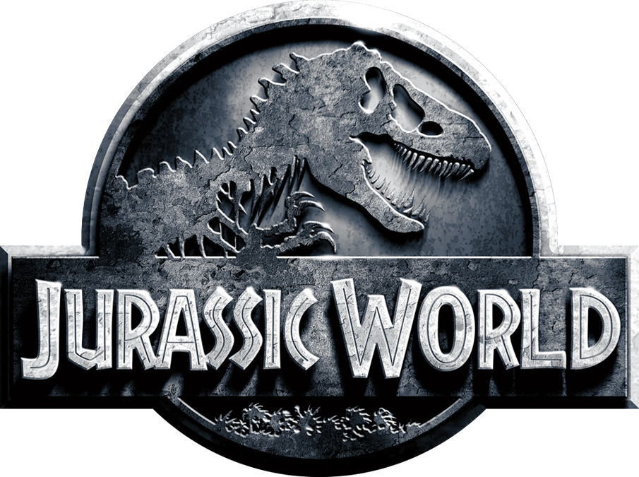

The joy of T. Rex
Jurassic World
By Bob Grimm
bobg@newsreview.com
 A few years back, word got out that Steven Spielberg and his cronies were looking to reboot the Jurassic Park franchise with dinosaurs controlled by the military. Internet chat rooms went berserk with this news, and the chatter was not positive. It appeared the idea got scrapped.
Not so fast, because Jurassic World actually incorporates evil military dudes wanting to use raptors in combat. Mind you, this is a fairly small part of the plot, and it winds up being a bit of a joke. Still, I really can't believe this idea has actually made it into a movie.
I also can't believe that a movie in which raptors are sought as military weapons is actually pretty good.
Taking place 22 years after the original movie (Jurassic Parks II and III are not acknowledged in this film), John Hammond's original idea has come to fruition. Jurassic World has been up and running for years under the guidance of Simon Masrani (Irrfan Khan), another rich guy owner who just wants the world to have lots of fun with dinosaurs. How naïve!
Claire (Bryce Dallas Howard), who has impossible hair and runs the place for Masrani, is dealing with some waning interest in the park. People are getting bored with “normal” dinosaurs. So she and the park's techs hatch a plan for a genetically engineered, hybrid dinosaur that's bigger and smarter than the T-Rex. The new monster is ready to be rolled out, and hopefully sponsored by Verizon.
Of course, the movie wouldn't be any good if the new monster, Indominus Rex, just hung out in its pen, eating goats. Nope, this sucker is getting loose, and lots of people and non-violent dinosaurs are in its path. Let it be said, this particular dinosaur is very nasty and very entertaining.
Director Colin Trevorrow, who had a hand in writing the script, throws everything into this movie. It's one of those sequels that makes fun of sequels, and it honestly couldn't be much dumber. But, sometimes, dumb is good when you are dealing with a big movie featuring rampaging dinosaurs.
"It Boy" Chris Pratt plays the male lead, Owen, a sort of dino whisperer who has a special relationship with a trio of raptors. He's got them trained to the point where they won't immediately tear his face off and he can stand in a pen with them for a bit. Still, these aren't dogs, and they look like they will eat his legs if given an honest chance.
Vincent D'Onofrio is the bad guy military type who wants the raptors to fight ISIS. It's all very kooky, but D'Onofrio has a talent for selling the ridiculous, and Trevorrow obviously isn't being held back by reality.
Honestly, you have to be a good director to pull this sort of thing off, and Trevorrow, whose only other big screen credit is the incredibly awesome Safety Not Guaranteed, proves to be the right choice. He balances many plot threads (a couple of brothers lost in the park, evil military dudes, crazy dinosaurs) and delivers something that goes down easy on a summer movie night.
In addition to the Indominus Rex, who is a real keeper as far as psycho movie dinos are concerned, there's a big, water-faring beastie that eats great white sharks, plenty of flying dinosaur mayhem, and lots of raptor rampages. This one spares no expense when it comes to dinosaur screen time.
Of course, things are left open for a sequel, and there will be more, for sure. $500 million worldwide in your first weekend usually grants one a sequel. Jurassic World winks so much at the genre that it's almost a comedy, a comedy where lots of people get eaten by dinosaurs in totally insane ways.